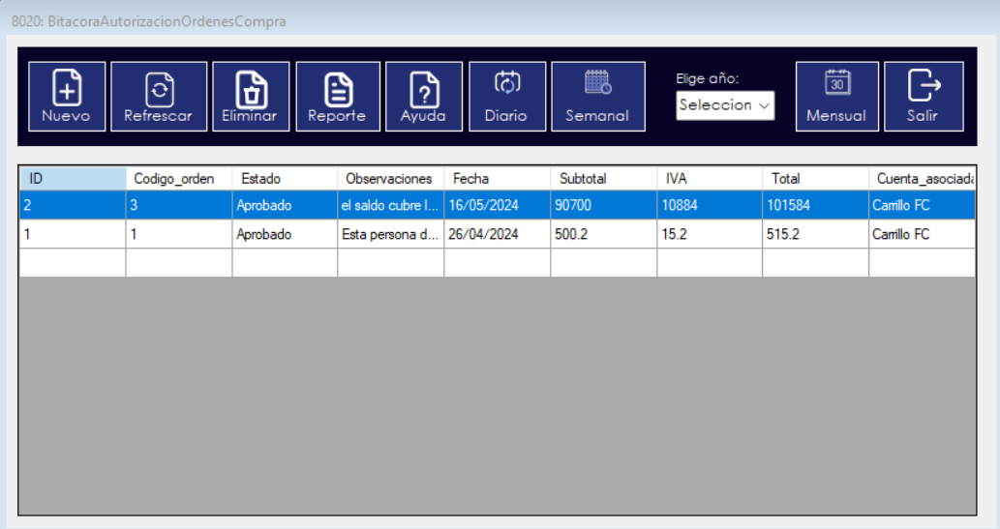

Al iniciar el proceso, se mostrará la bitácora de las autorizaciones realizadas. Esta bitácora tiene como objetivo principal mostrar todas las autorizaciones que se han realizado tanto en la fecha actual como en fechas anteriores.
Para insertar un nuevo registro, haga clic en el botón "Nuevo". Esto abrirá una ventana donde podrá ingresar los datos, completando los campos correspondientes. Deberá seleccionar el número de orden y la cuenta asociada; la búsqueda de ambos se realizará automáticamente. Después, haga clic en el botón "Verificar". Este verificará si el saldo de la cuenta cubre la orden. Si todo está correcto, el sistema indicará una marca de verificación verde y automáticamente ingresará las observaciones. En caso contrario, si el saldo no cubre la orden, el sistema mostrará una marca de X y añadirá las observaciones correspondientes.
Solo será necesario llenar campos como la fecha y el estado. Además, encontrará otros botones como "Registrar" (habilitado después de verificar, para guardar los registros), "Modificar" (actualmente deshabilitado), "Limpiar" (para borrar todos los campos), "Ayuda" (abrirá este documento) y "Salir" (para cerrar la ventana).
Después de haber ingresado un nuevo registro, haga clic en el botón "Actualizar" para ver el último registro realizado.
Para eliminar un registro, seleccione la fila correspondiente en la bitácora y luego haga clic en el botón "Eliminar". Esto mostrará un mensaje preguntando si está seguro de eliminar el registro. Si confirma seleccionando "Sí", el registro será eliminado. En caso contrario, se mostrará un mensaje indicando que el registro no se eliminó.

La bitácora le ofrece la funcionalidad de ver registros anteriores. Para ello, simplemente debe hacer doble clic en la fila seleccionada. Esto abrirá nuevamente la ventana de registro, pero con los campos llenos con la información del registro seleccionado, aunque con los botones de verificacion y registro deshabilitados. Aqui es donde el boton de modificar se habilita (se hablara mas adelante).
La bitácora le permite ver y modificar los registros. Para hacerlo, simplemente haga doble clic en la fila seleccionada. Esto abrirá la ventana de registro nuevamente. Al hacer clic en el botón de "Modificar", se habilitarán los campos necesarios para la edición, como el número de orden, la cuenta asociada, el estado, la fecha, etc.
Una vez que haya terminado de realizar las modificaciones, haga clic nuevamente en el botón de "Modificar". Se mostrará un mensaje preguntando si desea guardar los cambios. Si selecciona "Sí", las modificaciones se guardarán en la base de datos. En caso contrario, el registro seleccionado no se modificará ni se guardará ninguna edición.
La bitácora le ofrece la funcionalidad de ver los registros que se han realizado en la fecha actual. Para ello, simplemente debe hacer clic en el boton "Diario". Esto mostrara solamente los registros realizados en la fecha actual.
La bitácora le ofrece la funcionalidad de ver los registros que se han realizado en la semana actual. Para ello, simplemente debe hacer clic en el boton "Semanal". Esto mostrara solamente los registros realizados en la semana actual.
La bitácora le ofrece la funcionalidad de ver los registros que se han realizado mensualmente. Para ello, debemos escoger el año de los registros y luego dar clic en el boton "Mensual". esto mostrara los registros realizados en los meses del año seleccionado.